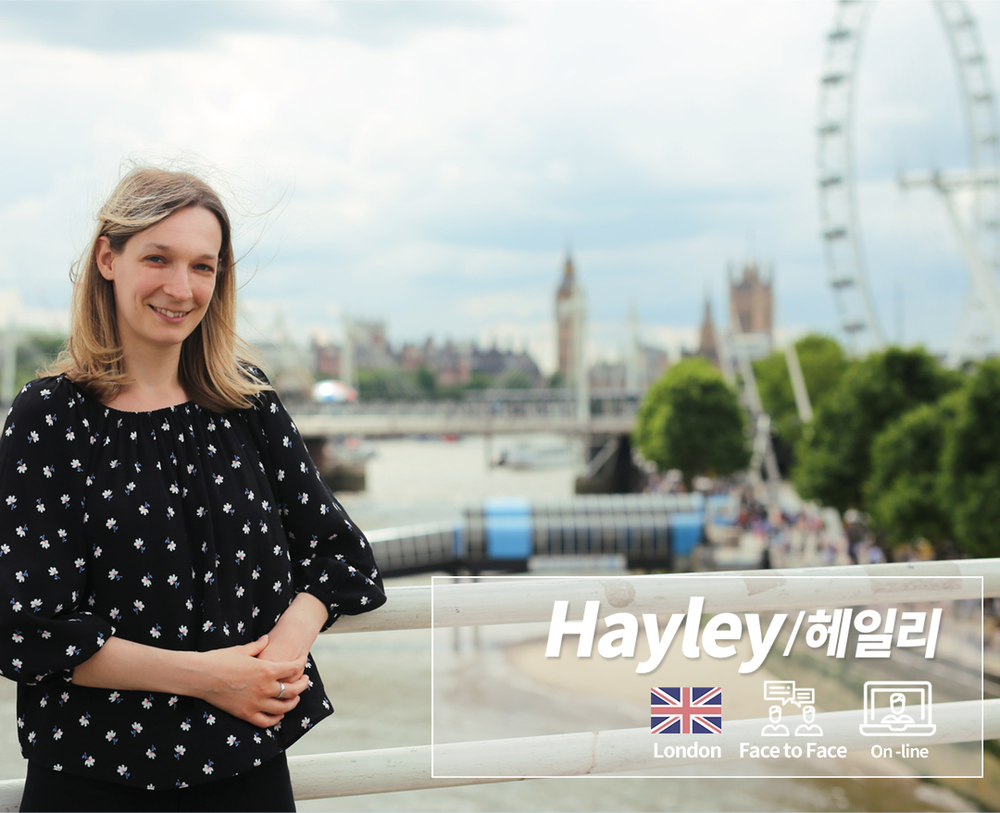

-
우리는 영국인입니다
언어는 그 문화까지 이해하고 있어야 정확하게 가르칠 수 있습니다.
-
우리는 전문가입니다
단순히 영어를 할 줄아는 사람의 수업과 자격증,경력을 갖춘 전문가의 수업은 다릅니다.
-
우리는 튜터 그 이상입니다
가르치는 것을 넘어 학생들의 영어에 대한 어려움을 함께 고민합니다.
-
우리는 함께 노력합니다
1:1 수업이 가져야하는 이상적인 모습을 위해 정기적으로 티칭 노하우를 공유합니다.
-
우리는 교육자입니다
더 많은 학생을 가르치는 것 보다 더 제대로 가르치는 것이 우리의 목표입니다.
강사소개


- 


-
헤일리 선생님의 수업은 늘 밝은 웃음으로 시작합니다.
선생님의 긍정 에너지와 소녀 같은 재기 발랄함이 학생들을 편하게 해 주죠.
여기에 10년 이상의 티칭 경력과 DELTA(Diploma in Teaching English to Speakers of Other Languages)를 보유하고 있는 최고의 전문성까지 더해져 체계적으로 학생들의 영어 실력을 향상 시켜줍니다.
언어학을 전공하고 프랑스어, 러시아어까지 섭렵하면서 외국어 학습에 대한 깊은 이해를 하게 되었다는 헤일리 선생님.
그래서인지 학생들의 영어 공부에 대한 고민을 함께 하고 고충도 헤아려주는 따뜻함까지 겸비하고 있답니다.
제너럴 스피킹부터 각종 영어공인시험, 라이팅, 파닉스까지.
전천후 헤일리 선생님과 함께 영국 영어를 시작해보세요.학력 및 자격증
BA Russian and Linguistics, Queen Mary University of London (1st Class Honours)
Cambridge DELTA, International House, London수업과목
-
외국인 울렁증이 있다? 그렇다면 벤 선생님을 만나보세요.
남녀노소 누구나 벤 선생님의 수업을 좋아하는 이유는 바로 다양한 액티비티와 편안함!
베트남, 태국, 칠레 등 많은 나라에서 영국 영어를 가르쳐오면서 쌓아온 경험을 통해 학생들이 수업에 최대한 집중할 수 있도록 이끌어 줍니다.
벤 선생님은 영어 문법 코스를 따로 수료할 만큼 학생들의 기초를 다지는데 도움이 되고자 노력을 해왔습니다.
그래서 한 단계씩 장기적으로 탄탄한 실력을 쌓는 데는 벤 선생님의 수업만큼 효율적인 것이 없죠.
특히 키즈 잉글리시 분야에서의 인기는 독보적이에요.
참! 잊지 말아야 할 사실은 벤 선생님이 영국 명문인 에든버러대학교에서 종교학을 전공한 엘리트라는 점.
고급레벨 학생들은 다양한 주제로 이루어지는 깊이 있는 토론을 통해 정통 영국영어의 멋짐을 배울 수 있답니다.학력 및 자격증
BA/MA Religious Studies, University of Edinburgh
Cambridge CELTA, International House, Budapest
ELA certificate ( English Language Awareness ), CACTUS수업과목
-
영어공부를 하면서 실력이 늘 뿐만 아니라 속 깊은 이야기까지 하게 되는 경험.
바로 나린 선생님과의 수업입니다.
학생들의 이야기를 진심으로 듣고 공감해주는 나린 선생님의 모습이 큰 힘이 되죠.
친구와 할 수 있는 이야기가 많은 것처럼 나린 선생님과의 수업에서는 최신 시사 이슈부터 사소한 일상의 이야기까지 나누게 됩니다.
단, 어떤 주제로 수업을 하든 배워야 할 내용은 절대 놓치지 않고 꼼꼼하게 다뤄지는 것이 나린 선생님 수업의 포인트!
특히, 나린 선생님의 섬세하고 철저한 수업 준비는 브릿센트 선생님들 모두가 인정할 정도랍니다.
그렇기 때문에 나린 선생님 수업은 항상 신청이 어려울 정도로 인기만점이니 서두르세요.학력 및 자격증
MSc Mental Health, King’s College London
BSc Psychology, Roehamptom University
TEFL/TESOL certificate, Rose of York language school, London수업과목
-
여유가 있을 땐 언제나 책을 읽고 있는 잭 선생님.
전공 관련 잡지에 글을 기고할 정도로 문장력이 뛰어나 정확하면서도 개성 있는 표현을 다양하게 배우는 데는 잭 선생님의 수업이 제격이죠!
워릭 대학교에서 영화를 전공한 수재이지만 졸업 후 영어 티칭의 즐거움에 푹 빠져 영어 선생님이 되었다고 합니다.
인도네시아에서 4년간 영어를 가르치면서 어학원에서 올해의 선생님으로 선정될 만큼 인기와 실력을 겸비하고 있답니다.
넘치는 위트와 탄탄한 구성으로 시간 가는 줄 모르고 수업한다는 것이 학생들의 후기!
여러분도 잭 선생님의 수업을 통해 재미있지만 알차게 영국 영어를 배워보는 건 어떨까요?학력 및 자격증
BA Hons Film and Television Studies, University of Warwick
TEFL (Teaching English as a Foreign Language) Certificate수업과목
-
이보다 더 아카데믹 영어를 잘 가르칠 수 있는 선생님은 없다! 심지어 비즈니스 영어까지!
바이런 선생님은 13년 이상 한국 명문대에서 아카데믹 영어 강의를 진행했을 뿐만 아니라 국내 공무원, 대기업 직원들을 대상으로 비즈니스 영어 강의를 진행해 온 실력파입니다.
바이런 선생님도 한국에 살면서 한국어를 배우고 말하는데 많은 어려움을 겪었다고 해요.
그래서 더욱 학생들이 어떤 고민을 가지고 있고 힘든 점은 무엇인지 잘 이해하고 있답니다.
유학생, 취업 준비생이라면 바이런 선생님과의 수업을 강력 추천!
각종 인터뷰 면접관, 잡지 에디터로 활동한 경험을 가진 바이런 선생님과 여러분의 새로운 시작을 함께 해 보세요.학력 및 자격증
MA Education, Durham University (Merit)
MA Electronic Communication and Publishing, University College London
BSc (1st Class Honors) New Technology Media and Communications, University of East London
Cambridge CELTA, Regents Language Training, London수업과목
-
British Council이 인정한 35년 경력의 티칭 고수.
DELTA (Diploma in Teaching English to Speaker of Other Languages) 를 보유하고 있을 뿐만 아니라 IELTS 수업에 있어서는 감히 따라올 선생님이 없을 정도로 전문가입니다.
트라이얼 수업 단 10분만에 영어 레벨과 필요한 공부 과정을 조언해 줄 수 있는 노련함과 카리스마!
그렇다고 너무 긴장하지 마세요. 엄청난 카리스마 뒤에 숨겨져 있는 소녀다움이 학생들을 편안하게 해준답니다.
공식 채점표를 기준으로 한 정확한 예상 밴드 스코어와 피드백 제공이 필요하다면 더더욱 알리슨 선생님과의 수업이 필수! 망설이지 마세요.
학력 및 자격증
BA Geography, Durham University
RSA Diploma in TEFLA, International House 1987 (DELTA )
RSA Preparatory Certificate in TEFL, International House 1985 (CELTA)수업과목
-
코크니 슬랭부터 아카데믹 영어까지.
끝을 알 수 없는 매력의 소유자 코린 선생님의 수업은 학생들의 다양한 니즈에 딱 맞도록 구성됩니다.
특유의 차분함과 편안함 그 속에 숨겨져 있는 꼼꼼하고 체계적인 교수법이 코린 선생님 수업의 특징인데요.
영어뿐만 아니라 A-LEVEL, 전공 과목까지 다양한 연령대를 대상으로 튜터링을 해왔기 때문에 1:1 수업을 효과적으로 진행하는 노하우를 가지고 있답니다.
학생들에게 더 정확하고 효율적으로 수업하기 위해 한국어 공부에도 열심인 코린 선생님에게 영국 영어를 배워보세요!학력 및 자격증
MA Religions of Africa and Asia,/Indian religious traditions, SOAS, University of London
BA (Honors) Study of Religions, SOAS University of London
TEFL (Teaching English as a Foreign Language) Certificate수업과목
-
자신이 좋아하는 일을 할 때 가장 열심히 할 수 있죠?
영어가 좋아 영문학을 전공하고 이제는 학생들을 가르치는 것이 큰 기쁨이자 행복이라는 스테이시 선생님.
그래서인지 스테이시 선생님의 수업은 정성이 가득합니다.
영국뿐만 아니라 한국, 베트남에서 5년 이상 영국 영어를 가르치면서 아주 어린 학생들부터 성인들을 대상으로 제너럴 스피킹부터 IELTS 까지 다양한 수업을 진행하며 실력을 쌓아왔습니다.
수업시간이 다가올 수록 설레게 만드는 러블리함.
바쁜 스케줄 속에서도 DELTA (Diploma in Teaching English to Speaker of Other Languages) 취득까지 해 낸, 열정 가득한 스테이시 선생님이 여러분을 기다리고 있습니다.학력 및 자격증
BA English Literature & Theatre (2:1), University of Sheffield
CELTA / CELTA Young Learners
DELTA수업과목